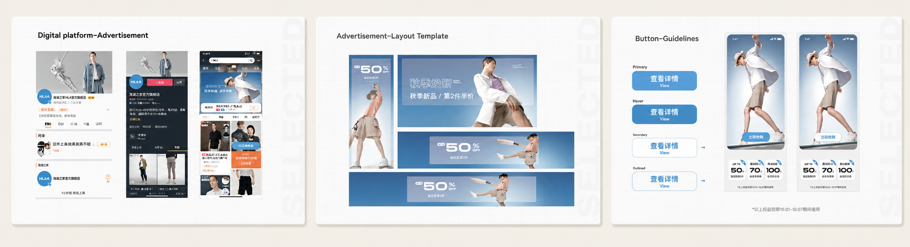
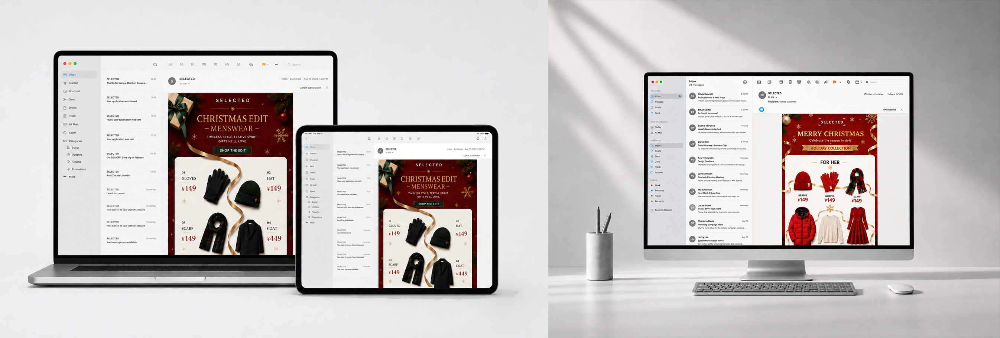

Standardise paid media without flattening the brand.
After a new brand guideline was established, I redesigned a set of reusable templates for paid advertising. The aim was to make recurring digital assets feel consistent and recognisably SELECTED, while giving teams a more efficient starting point for production.
Use one system for retention — not for every audience.
The template system was primarily designed to maintain brand consistency for existing customers. Acquisition creative for new customers and member-focused communication followed different strategic and visual requirements, so the system was not treated as a one-size-fits-all solution.

Reusable advertising layouts and UI rules translated the brand guideline into practical digital production templates.
Email campaigns required a separate visual language.
Email was treated as its own part of the paid-media ecosystem. Because these campaigns were aimed primarily at European and North American audiences, the visual direction differed from China-facing digital advertising. I worked with the UK marketing lead to translate campaign requirements into globally relevant email creative.

Holiday email executions adapted the wider brand system for global audiences and device-responsive layouts.
Menswear and womenswear needed distinct campaign edits.
As SELECTED spans both menswear and womenswear, major seasonal promotions often required separate editions. The core campaign language remained connected, but product selection, styling and communication were adapted to the intended audience.
What the role exposed about design decision-making.
At the time, my role sat close to execution rather than upstream strategy. I focused mainly on making the pages and assets visually strong, with limited influence over broader targeting or commercial decisions. Some digital-marketing data was available, but analysis was largely limited to CTR; ROI was not used as a design reference.
This became an important limitation in hindsight: strong visual consistency alone does not explain whether a paid-media system is commercially effective. It reinforced the need to connect design choices with audience segmentation, acquisition goals and broader performance metrics.
A scalable paid-media system needs more than visual consistency — it needs clear audience logic and measurable commercial feedback.